Danger creates immersion
Observation, route choice, preparation, retreat, and failure all matter.
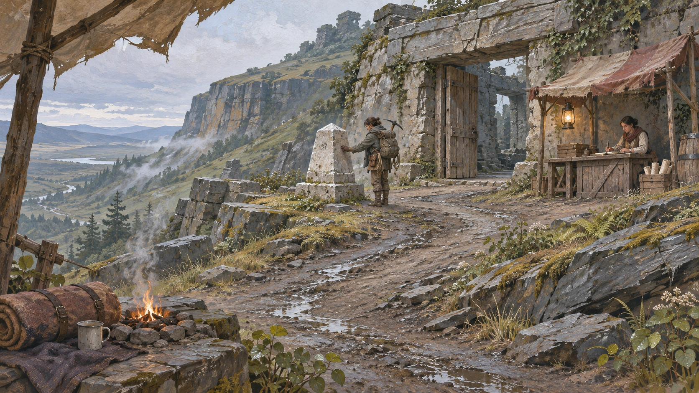
Nightcap · World concept
At Common Weir the fire is still lit. Beyond its gate, a road climbs past the last camp to a ruined doorway. What you learn on the way out matters on the way home.
Cross the ward line01 The premise
The river starts in the Pale Crown and reaches the sea at Sedge Quay. Grain travels west from Common Weir. Salt fish come back inland. The pipewrights of Ventfold need both to keep their crews fed.
Delvers travel these same roads. An archivist wants a rubbing from the Fallen Vault. A barge crew needs to know which landing clears at ebb. Trace the road through the Warded Basin.
Exploring geography. The Sill is one proposed continent. Its inhabitants know the histories of individual places. The larger story connecting them remains open.
02 The frontier
At Shellbank Steps the old mooring ring stands above dry ground. Follow the breached sea wall down to Knellwater and the path disappears at high tide. One coastline asks two different things of a traveler.

Observation, route choice, preparation, retreat, and failure all matter.
Walk to the Vault’s public Threshold to learn the return route. Private admission is a separate choice.
Skill sharpens through use. The safer return is built from what you learned.
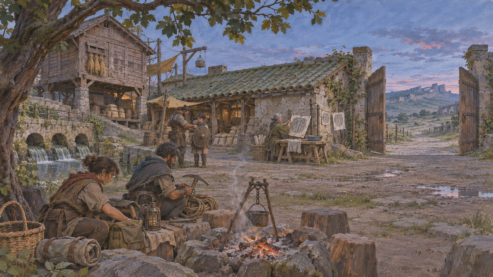
Inside the ward line
The grain market closes before the common fire goes out. Delvers sort supplies, practice a new discipline, and meet companions in the same yard.
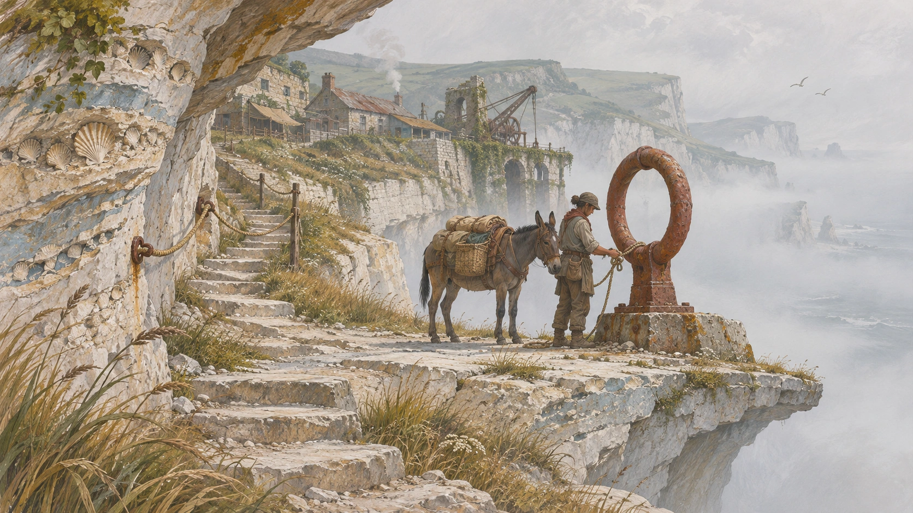
Beyond the ward line
Packers tie their animals to a ring once used by ships. From its footing, a handrope marks the high way around the crumbling shelf. Walk Shellbank Steps.
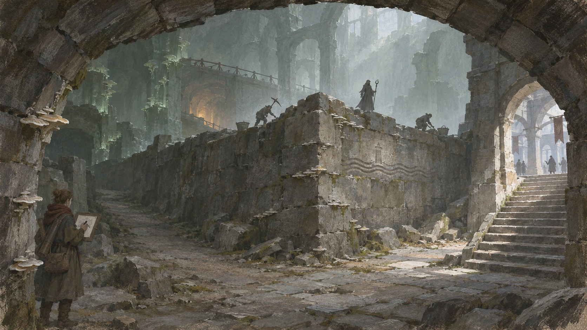
03 The last cycle
The town archivist wants a copy of the relief. A salvage foreman wants the same stone. A delver who gets close enough to take a rubbing has something worth bringing home. Enter the Fallen Vault.
04 The outer roads
At Knellwater Polder, drowned bearers carry a litter against the ebb. A living keeper waits on the dike for the last of them to pass. The old funeral road is still in use.
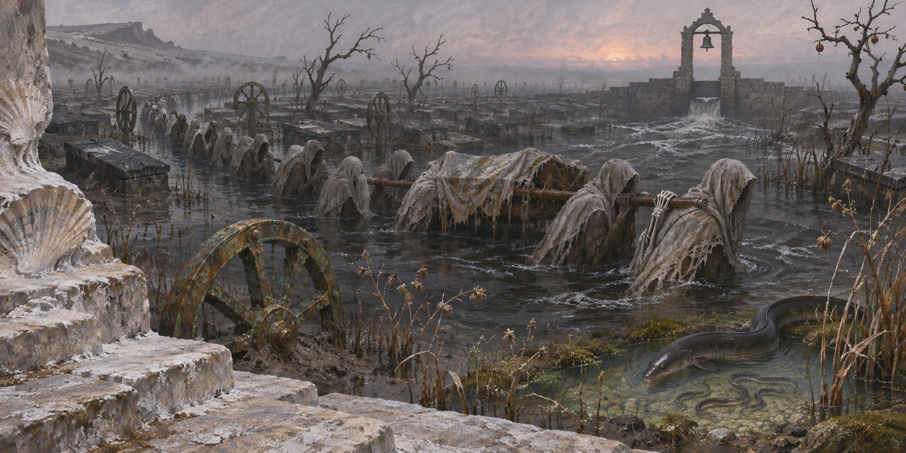
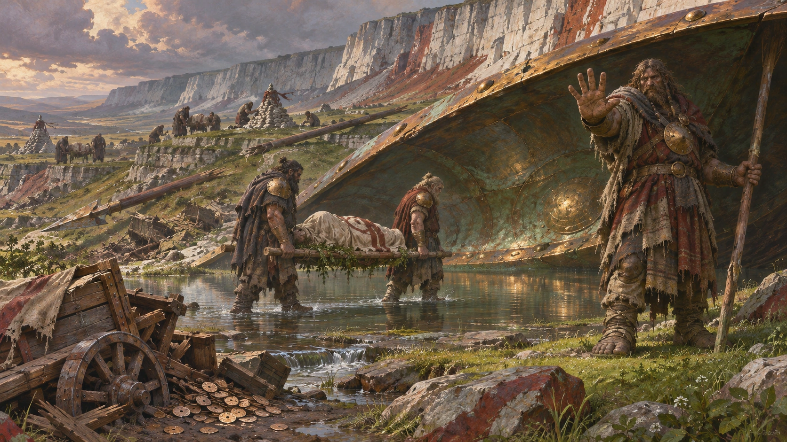
The Stridegrave
A sentry raises an empty hand. Behind him, two giants need space to turn a funeral bier. The baggage ramp lets you pass above them. Find the ramp.
In Palmfall Caldera, lava runs through the furrows of a god’s handprint. Hoodbacks shelter their eggs on warm tuff above the flow. A traveler can reach the abandoned hoist by taking the rim path around the brood.
05 The delvers
Classes grew out of frontier work. A Holder can keep an enemy facing the shield while a Binder buys time at the corner. A solo delver can train another discipline at Common Weir and prepare for the same pull.
Holder, Reaver, Warder, Mender, Binder, and Kindler are working descriptors, not final names. The roster remains Exploring.
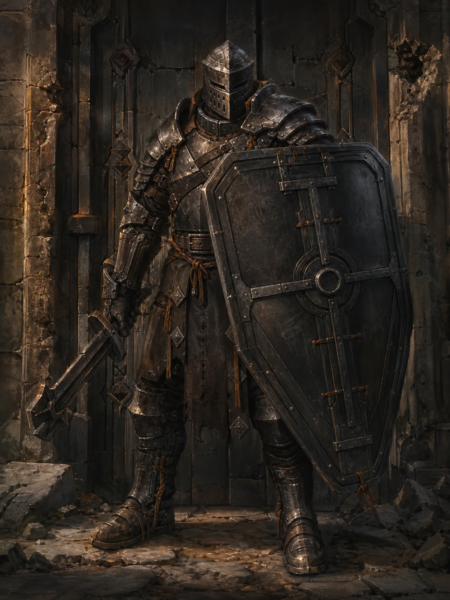
EnergyMitigation tank
Disciplined. Immovable. The door that will not open.
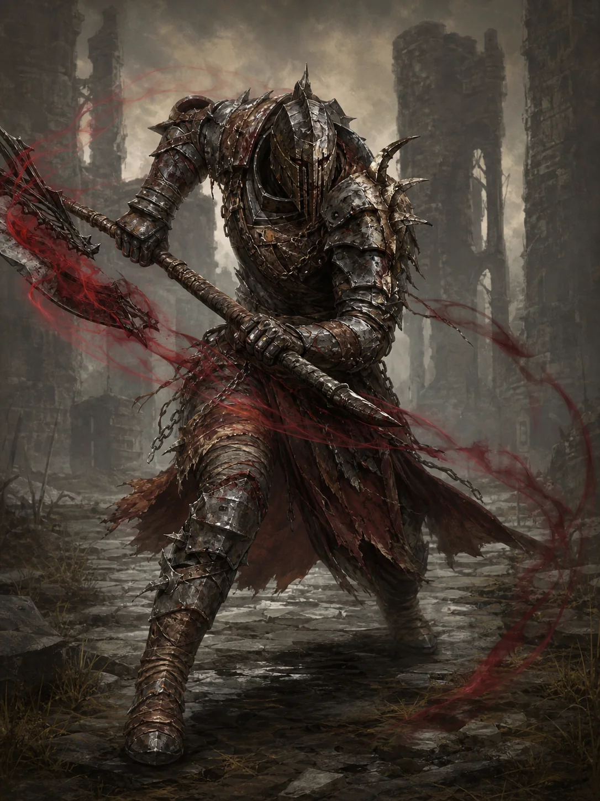
Energy + HPLifesteal tank
The wound that heals by dealing wounds.
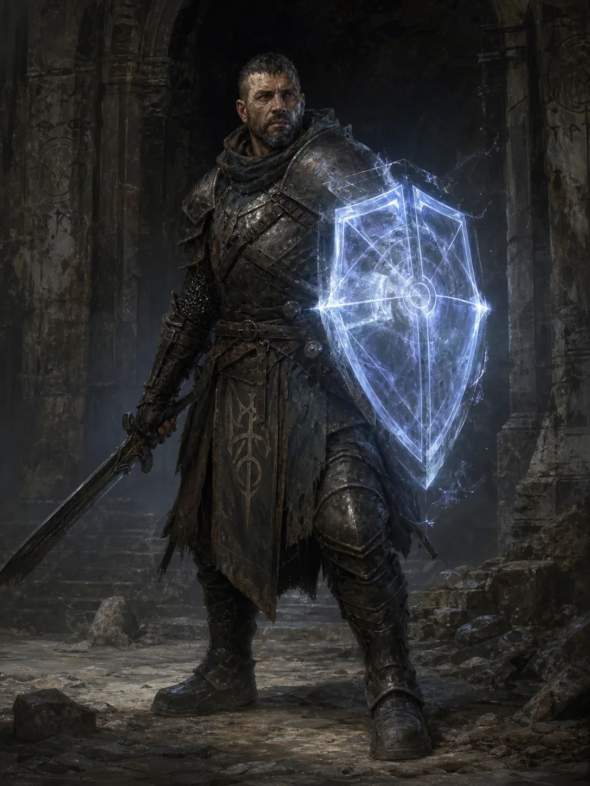
MPShield spell-tank
The light carried through the last dark.
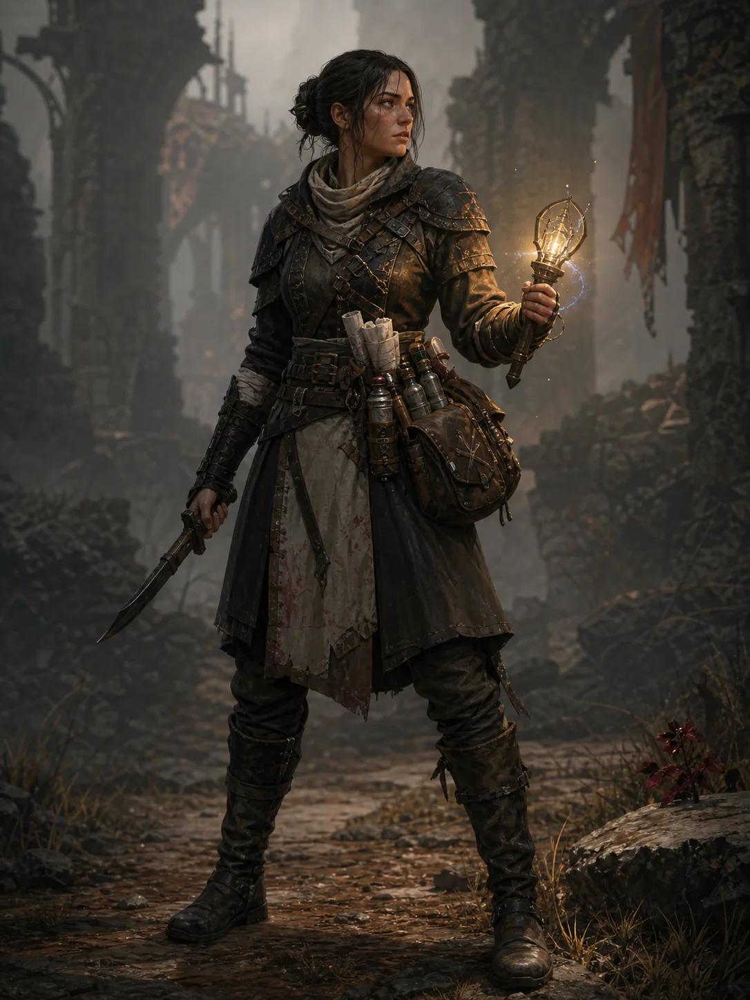
MPReactive healer
Steady, close to danger—the reason you walked back out.
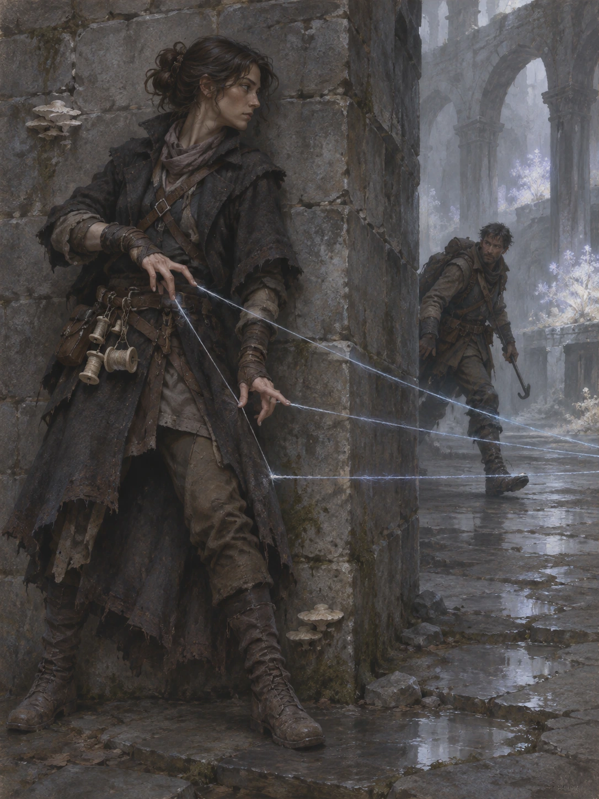
MPLockdown support
A measured thread buys time for one clean withdrawal.
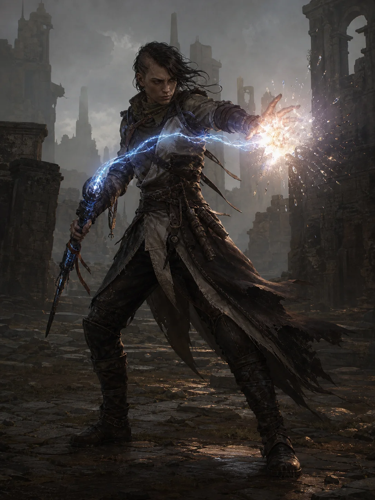
MPBurst striker
The last-cycle fire, briefly rekindled.
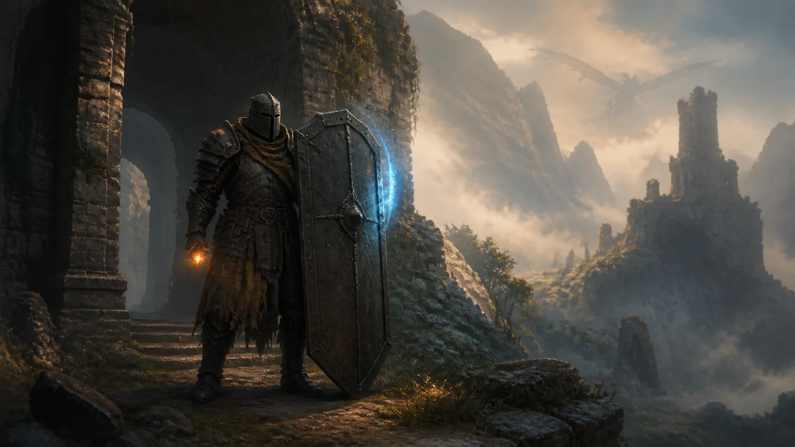
06 Character identity
Your first discipline is permanent. The sanctuary trainer offers two more. A Holder preparing for the Bloom might learn a Binder’s control or a Mender’s heal before attempting the corner alone.
07 Earned knowledge
The codex begins with rumor: a region, a creature, a fragment. As you encounter related foes, ruins, and evidence, uncertainty sharpens toward an exact source.
Routes, behaviors, safe places, dangerous times, and forgotten techniques are all progression. The next victory starts long before the next fight.
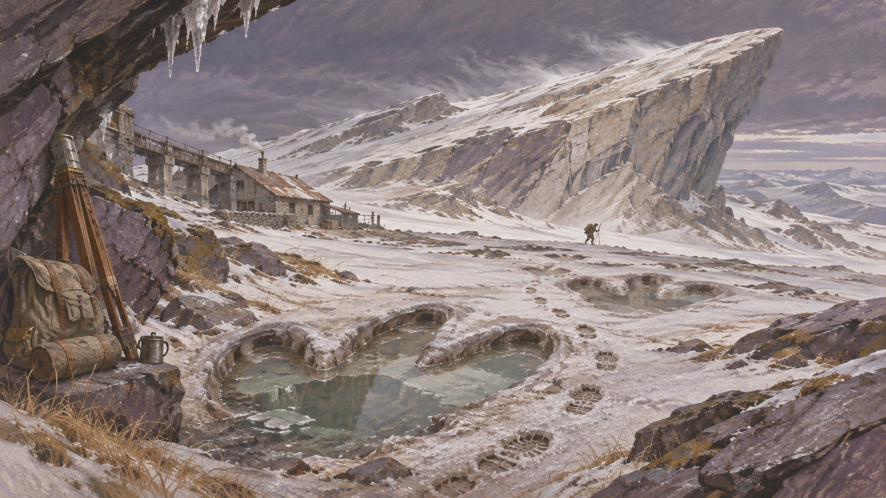
The intended loop
Solo-capable does not mean safe. Shared-world does not mean mandatory groups. Mastery is the difference between possible and earned.
Return to the east gate